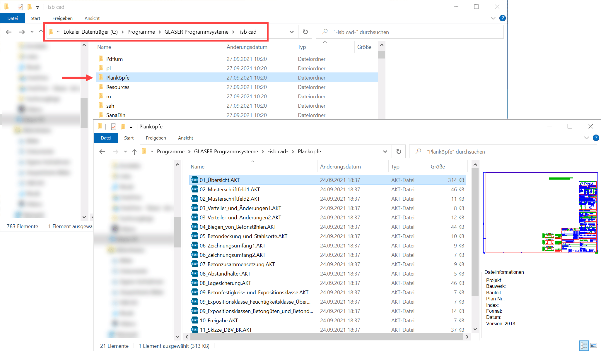
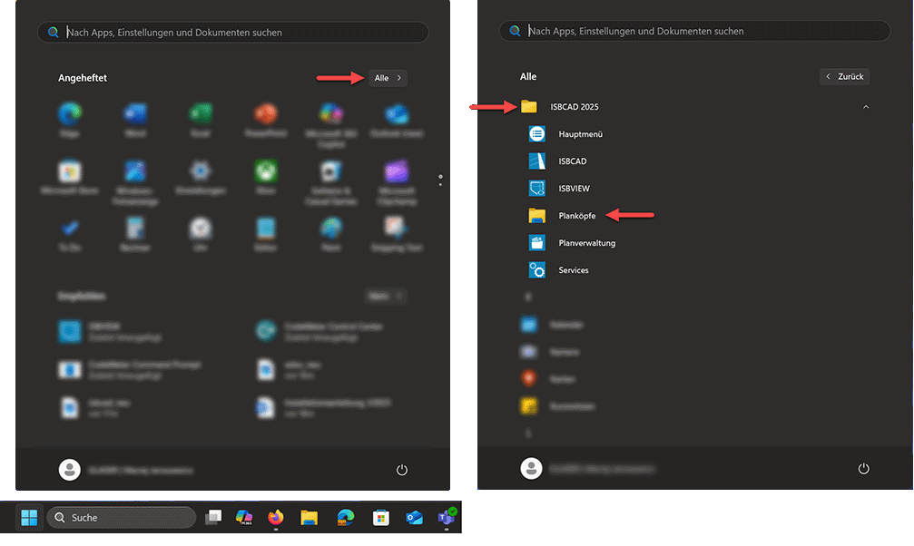
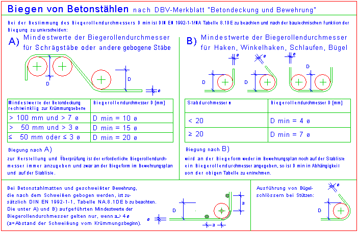

Die "Planköpfe nach EC2" Bibliothek enthält Stempel, Schrift- und Hinweisfelder, die im ISBCAD AKT-Format gespeichert sind. So lassen sich die Vorlagen und enthaltenen Makrotexte in ISBCAD je nach Bedarf anpassen. Die Bibliothek steht kosten- und lizenzfrei zur Verfügung und ist im ISBCAD Installationspaket enthalten.
Alle Stempel sind im Maßstab 1:100 gezeichnet und liegen auf der Folie 20 Stempel. Über den Hilfspunkt in der unteren rechten Ecke können sie exakt in den Blattrand eingefügt werden. Löschen Sie die Folie 21 Hinweis, nachdem Sie den letzten Stempel eingefügt haben.
Für spätere Änderungen benutzen Sie den Befehl [Konst 1 | Texte | MkrEdt].
In den Zeichnungen wurden die folgenden Parameter verwendet:
·Linien und Kreise: Stifte 1, 2 und 3
·Füllungen: Stifte 26, 27, 28, 29 und 32
·Texte: Arial
Jeder Stempel ist zu einer Gruppe zusammengefasst (s. Konst 3 | Gruppe | Managr). Dadurch ist eine nachträgliche Verschiebung, bedingt durch eine Veränderung der Plotfläche, leicht möglich.
Planköpfe in eine Zeichnung einfügen
Sie können die Planköpfe mit der Funktion [Datei | Einfüg] in die aktuell geöffnete Zeichnung einfügen oder per Drag&Drop aus dem Windows-Explorer in die Zeichnung ziehen.
Siehe: Zeichnung einfügen
Die Bibliothek wird standardmäßig im folgenden Verzeichnis installiert:
C:\Programme\GLASER Programmsysteme\-isb cad-\Planköpfe
 |
Planköpfe über das Windows Startmenü öffnen
Die "Planköpfe nach EC2" werden standardmäßig in einem schreibgeschützten Windows-Programmverzeichnis installiert. Sie können die AKT-Dateien zwar direkt aus dem Verzeichnis öffnen, aber nach der Bearbeitung nicht im selben Verzeichnis abspeichern. Wenn Sie Änderungen an der Original-Datei vorgenommen haben, nutzen Sie die Funktion Datei → Speichern unter... in der Menüleiste, und speichern Sie die Datei unter einem anderen, individuellen Namen und an einem geeigneten, nicht schreibgeschützten Ort ab.
Klicken Sie im Windows-Startmenü auf Alle. Suchen und öffnen Sie die Programmgruppe ISBCAD 202X. Klicken Sie anschließend auf Planköpfe, um den Ordner zu öffnen.
 |
|
Tipp: |
|
Richten Sie bei Bedarf in den Systemdaten ein Favoritenverzeichnis für eigene Vorlagen ein, um auf die Planköpfe schneller zugreifen zu können. |

Musterbeispiel: Biegen von Betonstählen

Siehe auch: